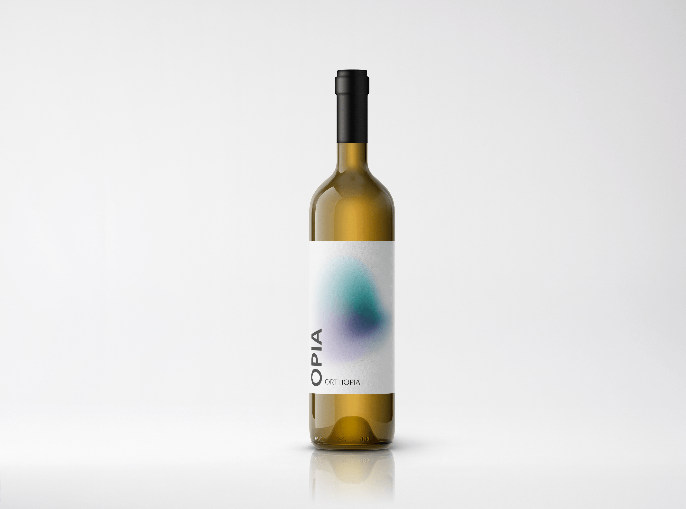
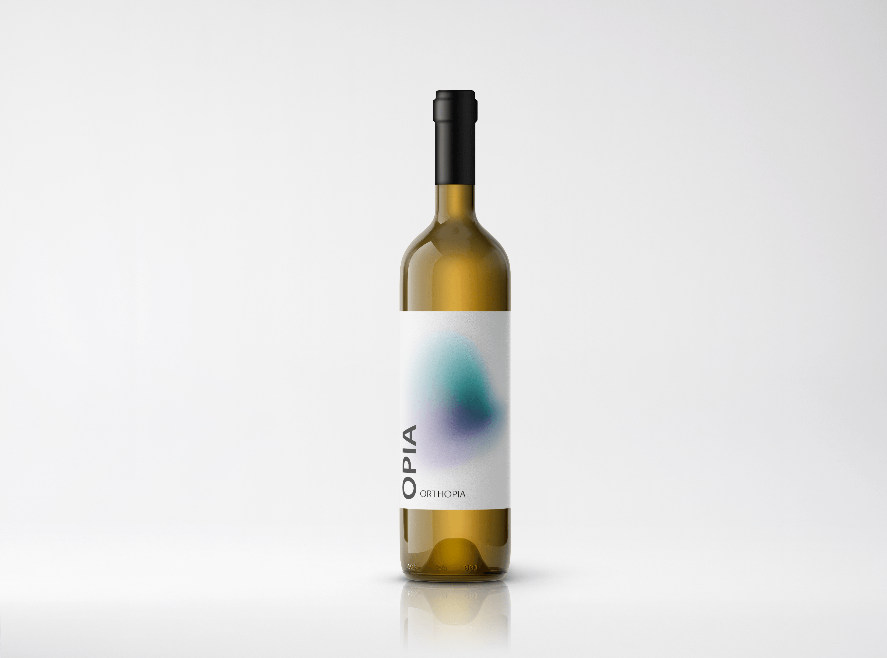

ANATROPIA
En udsøgt smagsoplevelse
Hos Opia har vi vine til enhver smagspalette. Anatropia er en biodynamisk vin fremstillet fra bunden. Det er en blanding af to druesorter fra det nordlige Baskerland og har fået den fineste behandling fra nogle af landets dygtigste vinavlere. Denne nye vin er udkommet af et fantastisk samarbejde mellem holdet bag Opia og vingården Lombardo.
Vores Vision
Mærk Verden
Ikke mange mennesker kender til biodynamisk da det ikke er særlig udbredt i verdenen, dette vil Opia forsøge at lave om på. Processen bag biodynamisk vin betyder at man blandt andet ikke svovler vinen, hvilket giver den en helt bestemt smag. Vores målsætninger bunder ud i, at gøre avl, produktion og process så naturlig som mulig, samt sørge for høj kvalitet og fantastisk smag. Vin er ikke en kemisk fremstillet drik og smager skønt i sig selv. Vi tror på, at jorden, druerne og fantastisk håndværk kan skabe et produkt som alle vinelskere kan nyde både til måltider, og hyggelige stunder.
 


OM OS
Tre studerende fra KEA
Opia er et gruppeprojekt som omhandler en fælles interesse for biodynamisk vin. Projektet er en del af forløbet Dynamisk Web på andet semester under uddannelsen multimedie design på KEA. Gruppen består af Carl Rasmussen, Laura Ragnarsdóttir og Bertram Bertelsen. Vi er ikke eksperter i biodynamisk vin, men er alle interesserede og nysgerrige omkring dette koncept. Ønsker du at følge med i Opia's udvikling kan du finde vores instagram nedenfor.